<title>Путь пользователя MigraTrack</title>
<link rel="preconnect" href="https://fonts.googleapis.com">
<link rel="preconnect" href="https://fonts.gstatic.com" crossorigin>
<link rel="stylesheet" href="https://fonts.googleapis.com/css2?family=Plus+Jakarta+Sans:wght@400;500;600;700;800&family=JetBrains+Mono:wght@400;500&display=swap">
<style>
/* Layout: a numbered journey. Each step has its story on the left and the device screens on the right; phone width stacks them. */
:root {
  --bg: #0e0e10;
  --surface: #18181b;
  --surface-2: #232327;
  --fg: #f4f1f2;
  --muted: #a69c9f;
  --caption: #e6bcbd;
  --pink: #ff2d55;
  --green: #30d158;
  --cyan: #00e0ee;
  --amber: #ff9f0a;
  --line: rgba(255, 255, 255, 0.09);
  --shot-ring: rgba(255, 255, 255, 0.14);
  --font-ui: "Plus Jakarta Sans", -apple-system, "SF Pro Text", "Segoe UI", sans-serif;
  --font-data: "JetBrains Mono", ui-monospace, "SF Mono", Menlo, monospace;
  color-scheme: dark;
}
@media (prefers-color-scheme: light) {
  :root:not([data-theme="dark"]) {
    --bg: #f7f3f4; --surface: #ffffff; --surface-2: #efe7ea; --fg: #1b1719; --muted: #6c6064;
    --caption: #9a2f4c; --pink: #d6003a; --green: #13803a; --cyan: #00727e; --amber: #a85f00;
    --line: rgba(27, 23, 25, 0.10); --shot-ring: rgba(27, 23, 25, 0.16); color-scheme: light;
  }
}
:root[data-theme="light"] {
  --bg: #f7f3f4; --surface: #ffffff; --surface-2: #efe7ea; --fg: #1b1719; --muted: #6c6064;
  --caption: #9a2f4c; --pink: #d6003a; --green: #13803a; --cyan: #00727e; --amber: #a85f00;
  --line: rgba(27, 23, 25, 0.10); --shot-ring: rgba(27, 23, 25, 0.16); color-scheme: light;
}

* { box-sizing: border-box; }
body {
  background: var(--bg);
  color: var(--fg);
  font-family: var(--font-ui);
  font-size: 15px;
  line-height: 1.55;
  -webkit-font-smoothing: antialiased;
}
.page { max-width: 1180px; margin: 0 auto; padding-inline: 20px; padding-block: 40px 72px; display: grid; gap: 56px; }

h1, h2, h3 { margin: 0; text-wrap: balance; letter-spacing: -0.01em; }
p { margin: 0; }
.eyebrow { font-size: 11px; font-weight: 700; letter-spacing: 0.12em; text-transform: uppercase; color: var(--caption); }

/* Intro */
.intro { display: grid; gap: 18px; max-width: 760px; }
.intro h1 { font-size: clamp(30px, 5vw, 44px); font-weight: 800; line-height: 1.08; }
.intro h1 em { font-style: normal; color: var(--pink); }
.intro p { color: var(--muted); font-size: 16px; max-width: 64ch; }

.facts { display: grid; grid-template-columns: repeat(4, minmax(0, 1fr)); gap: 1px; background: var(--line); border: 1px solid var(--line); border-radius: 16px; overflow: hidden; }
.fact { background: var(--surface); padding: 16px 18px; display: grid; gap: 4px; min-width: 0; }
.fact b { font-size: 20px; font-weight: 800; line-height: 1.25; font-variant-numeric: tabular-nums; }
.fact span { color: var(--muted); font-size: 13px; }
.fact b.ok { color: var(--green); }

/* Contents */
.toc { display: grid; gap: 12px; }
.toc ol { list-style: none; margin: 0; padding: 0; display: flex; flex-wrap: wrap; gap: 8px; }
.toc a {
  display: inline-flex; align-items: center; gap: 8px; padding: 7px 12px 7px 8px; border-radius: 999px;
  background: var(--surface); border: 1px solid var(--line); color: var(--fg); text-decoration: none; font-size: 13px; font-weight: 600;
}
.toc a:hover { border-color: var(--pink); }
.toc a:focus-visible, .shot:focus-visible { outline: 2px solid var(--cyan); outline-offset: 3px; }
.toc a .n { width: 22px; height: 22px; border-radius: 50%; display: grid; place-items: center; font-size: 11px; background: var(--surface-2); font-variant-numeric: tabular-nums; }
.toc a .d { width: 7px; height: 7px; border-radius: 50%; }

/* Steps */
.journey { display: grid; gap: 0; }
.step {
  display: grid; grid-template-columns: 56px minmax(0, 330px) minmax(0, 1fr); gap: 0 28px;
  padding-block: 36px; border-top: 1px solid var(--line); scroll-margin-top: 16px;
}
.step:last-child { border-bottom: 1px solid var(--line); }
.num {
  width: 44px; height: 44px; border-radius: 50%; display: grid; place-items: center;
  font-weight: 800; font-size: 15px; font-variant-numeric: tabular-nums;
  border: 2px solid var(--pink); color: var(--pink);
}
.step.watch .num { border-color: var(--green); color: var(--green); }
.story { display: grid; gap: 12px; align-content: start; min-width: 0; }
.story h2 { font-size: 21px; font-weight: 700; line-height: 1.25; }
.story p { color: var(--muted); }
.story p strong { color: var(--fg); font-weight: 600; }
.device { display: inline-flex; align-items: center; gap: 6px; font-size: 11px; font-weight: 700; letter-spacing: 0.1em; text-transform: uppercase; }
.device::before { content: ""; width: 8px; height: 8px; border-radius: 50%; background: currentColor; }
.device.phone { color: var(--pink); }
.device.watch { color: var(--green); }
.device + .device { margin-left: 12px; }
.check {
  display: grid; grid-template-columns: auto 1fr; gap: 8px; align-items: start;
  font-family: var(--font-data); font-size: 12px; line-height: 1.5; color: var(--fg);
  background: var(--surface); border: 1px solid var(--line); border-radius: 10px; padding: 9px 11px;
}
.check::before { content: "✓"; color: var(--green); font-weight: 700; }
.check code { font-family: inherit; color: var(--cyan); word-break: break-word; }

.shots { display: flex; flex-wrap: wrap; gap: 22px 18px; align-content: start; min-width: 0; }
figure { margin: 0; display: grid; gap: 8px; align-content: start; width: 182px; max-width: 100%; }
figure.wide { width: min(560px, 100%); }
figcaption { font-size: 12.5px; line-height: 1.4; color: var(--muted); }
.shot {
  display: block; width: 100%; padding: 0; border: 0; background: none; cursor: zoom-in;
  border-radius: 26px; overflow: hidden; box-shadow: 0 0 0 1px var(--shot-ring), 0 10px 28px rgba(0, 0, 0, 0.28);
  transition: transform 160ms ease, box-shadow 160ms ease;
}
.shot:hover { transform: translateY(-2px); box-shadow: 0 0 0 1px var(--pink), 0 14px 30px rgba(0, 0, 0, 0.32); }
.shot img { display: block; width: 100%; height: auto; }
figure.watch { width: 158px; }
figure.watch .shot { border-radius: 40px; }
figure.wide .shot { border-radius: 14px; }
figure.flat .shot { border-radius: 18px; }

/* Results */
.section-head { display: grid; gap: 8px; margin-bottom: 18px; }
.section-head h2 { font-size: 26px; font-weight: 800; }
.section-head p { color: var(--muted); max-width: 70ch; }
.table-wrap { overflow-x: auto; border: 1px solid var(--line); border-radius: 14px; }
table { width: 100%; border-collapse: collapse; min-width: 640px; font-size: 13.5px; }
th, td { text-align: left; padding: 11px 14px; border-bottom: 1px solid var(--line); vertical-align: top; }
tr:last-child td { border-bottom: 0; }
th { font-size: 11px; letter-spacing: 0.1em; text-transform: uppercase; color: var(--caption); background: var(--surface); font-weight: 700; }
td code { font-family: var(--font-data); font-size: 12px; color: var(--cyan); }
.pill { display: inline-block; padding: 2px 9px; border-radius: 999px; font-size: 12px; font-weight: 700; white-space: nowrap; }
.pill.pass { background: color-mix(in srgb, var(--green) 16%, transparent); color: var(--green); }
.pill.note { background: color-mix(in srgb, var(--amber) 16%, transparent); color: var(--amber); }
.pill.sim { background: var(--surface-2); color: var(--muted); }

.notes { display: grid; grid-template-columns: repeat(auto-fit, minmax(300px, 1fr)); gap: 14px; }
.note { background: var(--surface); border: 1px solid var(--line); border-radius: 14px; padding: 16px 18px; display: grid; gap: 8px; align-content: start; min-width: 0; }
.note h3 { font-size: 15px; font-weight: 700; display: flex; gap: 8px; align-items: center; flex-wrap: wrap; }
.note p, .note li { color: var(--muted); font-size: 14px; }
.note ul { margin: 0; padding-left: 18px; display: grid; gap: 6px; }

/* Zoom */
dialog { border: 0; padding: 0; background: transparent; max-width: 96vw; max-height: 94vh; }
dialog::backdrop { background: rgba(8, 8, 10, 0.86); }
dialog img { display: block; max-width: 96vw; max-height: 88vh; width: auto; height: auto; border-radius: 24px; cursor: zoom-out; }
dialog p { color: #f4f1f2; text-align: center; font-size: 14px; margin-top: 10px; }

@media (max-width: 900px) {
  .facts { grid-template-columns: repeat(2, minmax(0, 1fr)); }
  .step { grid-template-columns: 44px minmax(0, 1fr); gap: 18px 16px; }
  .num { width: 36px; height: 36px; font-size: 13px; }
  .shots { grid-column: 1 / -1; }
}
@media (max-width: 520px) {
  .page { padding-inline: 16px; gap: 44px; }
  .shots { display: grid; grid-template-columns: repeat(2, minmax(0, 1fr)); }
  figure, figure.watch { width: auto; }
  figure.wide { grid-column: 1 / -1; width: auto; }
}
@media (prefers-reduced-motion: reduce) { .shot { transition: none; } .shot:hover { transform: none; } }
</style>

<main class="page">
  <header class="intro">
    <span class="eyebrow">Сквозной тест · 4 октября 2026</span>
    <h1>Путь пользователя <em>MigraTrack</em> на iPhone и Apple Watch</h1>
    <p>Тест начался с чистой установки на обоих устройствах. Пользователь проходит онбординг, логирует приступы на iPhone, в приложении на часах, с компликации и из Smart Stack, смотрит аналитику и экспортирует отчёт. После каждого действия я проверял базу SQLite на обоих устройствах. Нажмите на снимок, чтобы увеличить его.</p>
    <div class="facts">
      <div class="fact"><b class="ok">15 из 15</b><span>шагов пройдено, ошибок приложения нет</span></div>
      <div class="fact"><b>iPhone 18 Pro Max</b><span>симулятор, iOS 27.0</span></div>
      <div class="fact"><b>Watch Series 12</b><span>46 мм, watchOS 27.0, в паре с iPhone</span></div>
      <div class="fact"><b>49</b><span>снимков экрана, Debug 1.0.0 (1)</span></div>
    </div>
  </header>

  <nav class="toc" aria-label="Шаги">
    <span class="eyebrow">Шаги</span>
    <ol>
      <li><a href="#s1"><span class="n">1</span><span class="d" style="background:var(--green)"></span>Часы до связи</a></li>
      <li><a href="#s2"><span class="n">2</span><span class="d" style="background:var(--pink)"></span>Диагнозы</a></li>
      <li><a href="#s3"><span class="n">3</span><span class="d" style="background:var(--pink)"></span>Триггеры</a></li>
      <li><a href="#s4"><span class="n">4</span><span class="d" style="background:var(--pink)"></span>Лечение</a></li>
      <li><a href="#s5"><span class="n">5</span><span class="d" style="background:var(--pink)"></span>Summary и Health</a></li>
      <li><a href="#s6"><span class="n">6</span><span class="d" style="background:var(--pink)"></span>Лог на iPhone</a></li>
      <li><a href="#s7"><span class="n">7</span><span class="d" style="background:var(--pink)"></span>Сохранение</a></li>
      <li><a href="#s8"><span class="n">8</span><span class="d" style="background:var(--green)"></span>Часы получают данные</a></li>
      <li><a href="#s9"><span class="n">9</span><span class="d" style="background:var(--green)"></span>Лог на часах</a></li>
      <li><a href="#s10"><span class="n">10</span><span class="d" style="background:var(--green)"></span>Компликации</a></li>
      <li><a href="#s11"><span class="n">11</span><span class="d" style="background:var(--green)"></span>Smart Stack</a></li>
      <li><a href="#s12"><span class="n">12</span><span class="d" style="background:var(--pink)"></span>Эпизод и профиль</a></li>
      <li><a href="#s13"><span class="n">13</span><span class="d" style="background:var(--pink)"></span>Insights</a></li>
      <li><a href="#s14"><span class="n">14</span><span class="d" style="background:var(--pink)"></span>Export</a></li>
      <li><a href="#s15"><span class="n">15</span><span class="d" style="background:var(--pink)"></span>Spotlight и Siri</a></li>
    </ol>
  </nav>

  <section class="journey" aria-label="Путь пользователя">

    <article class="step watch" id="s1">
      <div class="num">1</div>
      <div class="story">
        <span class="device watch">Apple Watch</span>
        <h2>Первый запуск часов, до связи с iPhone</h2>
        <p>Приложение на часах ставится вместе с приложением на iPhone. Пока iPhone не прислал данные, часы показывают <strong>30 из 30 дней без боли</strong> и подсказку открыть MigraTrack на iPhone.</p>
        <p>Логировать уже можно: часы берут интенсивность по умолчанию.</p>
      </div>
      <div class="shots">
        <figure class="watch"><button class="shot" type="button"></button><figcaption>Главный экран: кольцо дней без боли</figcaption></figure>
        <figure class="watch"><button class="shot" type="button">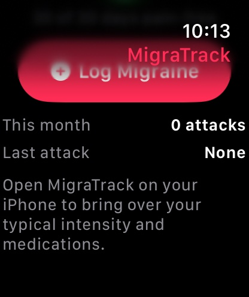</button><figcaption>Ниже: подсказка, что связи с iPhone ещё нет</figcaption></figure>
      </div>
    </article>

    <article class="step" id="s2">
      <div class="num">2</div>
      <div class="story">
        <span class="device phone">iPhone</span>
        <h2>Онбординг, шаг 1: диагнозы и базовый профиль</h2>
        <p>Пользователь открывает MigraTrack. Три шага онбординга задают базовый профиль. Выбираем <strong>Migraine with aura</strong> и <strong>Chronic Migraine</strong>, частоту 5–8 в месяц, длительность 4–12 ч и типичную интенсивность 6.</p>
        <p>Кнопка «Continue» неактивна, пока не выбран ни один диагноз.</p>
      </div>
      <div class="shots">
        <figure><button class="shot" type="button"></button><figcaption>Иконка на домашнем экране</figcaption></figure>
        <figure><button class="shot" type="button"></button><figcaption>Шаг 1: диагнозы</figcaption></figure>
        <figure><button class="shot" type="button"></button><figcaption>Выбраны два диагноза</figcaption></figure>
        <figure><button class="shot" type="button"></button><figcaption>Частота, длительность, интенсивность 6</figcaption></figure>
      </div>
    </article>

    <article class="step" id="s3">
      <div class="num">3</div>
      <div class="story">
        <span class="device phone">iPhone</span>
        <h2>Шаг 2: триггеры, включая свой</h2>
        <p>Цвет отметки зависит от категории, как в спецификации: погода бирюзовая, питание оранжевое. Выбраны падение давления, яркий свет, плохой сон и кофеин.</p>
        <p>«Add custom trigger» открывает системный алерт с полем ввода. Новый триггер <strong>Flashing neon signs</strong> появляется в разделе Custom и сразу отмечен.</p>
      </div>
      <div class="shots">
        <figure><button class="shot" type="button"></button><figcaption>Погода и окружение</figcaption></figure>
        <figure><button class="shot" type="button"></button><figcaption>Системный алерт для своего триггера</figcaption></figure>
        <figure><button class="shot" type="button"></button><figcaption>Кофеин и свой триггер</figcaption></figure>
      </div>
    </article>

    <article class="step" id="s4">
      <div class="num">4</div>
      <div class="story">
        <span class="device phone">iPhone</span>
        <h2>Шаг 3: схема лечения</h2>
        <p>Острые препараты, <strong>Ibuprofen 400mg</strong> и <strong>Sumatriptan 50mg</strong>, становятся пресетом. Они подставляются в каждый новый лог и в быстрый лог с часов.</p>
        <p>Профилактический Riboflavin 400mg входит в профиль и в отчёт. «Finish Setup» сохраняет профиль.</p>
      </div>
      <div class="shots">
        <figure><button class="shot" type="button"></button><figcaption>Острые препараты</figcaption></figure>
        <figure><button class="shot" type="button"></button><figcaption>Профилактика и Finish Setup</figcaption></figure>
      </div>
    </article>

    <article class="step" id="s5">
      <div class="num">5</div>
      <div class="story">
        <span class="device phone">iPhone</span>
        <h2>Summary и подключение Apple Health</h2>
        <p>После онбординга открывается Summary: <strong>30 из 30 дней без боли</strong>, баланс 100. Карточка сна предлагает подключить Apple Health.</p>
        <p>Системный лист HealthKit показывает наше объяснение: приложение только читает данные сна. В симуляторе данных сна нет, поэтому карточка показывает пустое состояние с подсказкой.</p>
      </div>
      <div class="shots">
        <figure><button class="shot" type="button"></button><figcaption>Summary нового пользователя</figcaption></figure>
        <figure><button class="shot" type="button"></button><figcaption>Доступ к Health: только чтение сна</figcaption></figure>
        <figure><button class="shot" type="button"></button><figcaption>Сна нет: пустое состояние</figcaption></figure>
      </div>
    </article>

    <article class="step" id="s6">
      <div class="num">6</div>
      <div class="story">
        <span class="device phone">iPhone</span>
        <h2>Лог приступа на iPhone</h2>
        <p>Вкладка Log уже заполнена пресетом: интенсивность 6 и два острых препарата. Пользователь ставит <strong>9</strong>, выбирает Left Temple, светобоязнь и тошноту.</p>
        <p>«Add Medication» открывает системный action sheet снизу. В нём весь каталог и «Other Medication…». Добавляем Hydration Electrolytes.</p>
      </div>
      <div class="shots">
        <figure><button class="shot" type="button"></button><figcaption>Форма открывается с пресетом</figcaption></figure>
        <figure><button class="shot" type="button"></button><figcaption>Интенсивность 9, локализация, симптомы</figcaption></figure>
        <figure><button class="shot" type="button"></button><figcaption>Препараты из профиля уже на месте</figcaption></figure>
        <figure><button class="shot" type="button"></button><figcaption>Action sheet: добавить препарат</figcaption></figure>
        <figure><button class="shot" type="button"></button><figcaption>Готово к сохранению</figcaption></figure>
      </div>
    </article>

    <article class="step" id="s7">
      <div class="num">7</div>
      <div class="story">
        <span class="device phone">iPhone</span>
        <h2>Сохранение и обновлённая сводка</h2>
        <p>«Save Episode Log» сохраняет приступ, даёт тактильный отклик и возвращает на Summary с баннером. Теперь <strong>29 из 30 дней без боли</strong>, баланс 96. Карточка Last Event показывает симптом и интенсивность 9/10.</p>
        <div class="check">SQLite iPhone: <code>9 | App | Ibuprofen, Sumatriptan, Hydration Electrolytes</code></div>
      </div>
      <div class="shots">
        <figure><button class="shot" type="button"></button><figcaption>Баннер подтверждения</figcaption></figure>
        <figure><button class="shot" type="button"></button><figcaption>Summary: 29/30, Last Event 9/10</figcaption></figure>
      </div>
    </article>

    <article class="step watch" id="s8">
      <div class="num">8</div>
      <div class="story">
        <span class="device watch">Apple Watch</span>
        <h2>Часы получают пресет и приступы</h2>
        <p>iPhone отправляет на часы пресет и приступы за 60 дней через WatchConnectivity. Кольцо на часах обновилось до <strong>29 из 30</strong>. Ниже появились «This month: 1 attack» и «Last attack: Oct 4». Подсказка о связи исчезла.</p>
      </div>
      <div class="shots">
        <figure class="watch"><button class="shot" type="button"></button><figcaption>Кольцо 29/30 с данными iPhone</figcaption></figure>
        <figure class="watch"><button class="shot" type="button">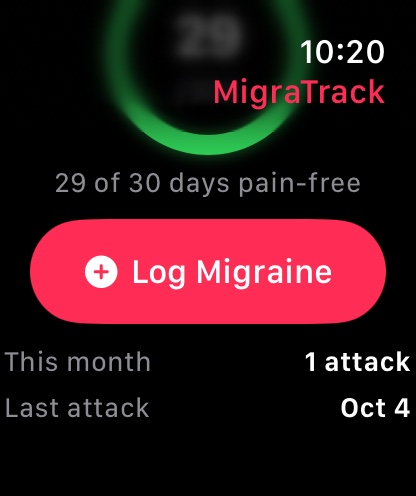</button><figcaption>Статистика месяца</figcaption></figure>
      </div>
    </article>

    <article class="step watch" id="s9">
      <div class="num">9</div>
      <div class="story">
        <span class="device watch">Apple Watch</span>
        <h2>Лог в приложении на часах</h2>
        <p>«Log Migraine» открывает выбор интенсивности. Значение пришло из пресета iPhone (6), цвет следует шкале тяжести. Его меняют колёсиком Digital Crown или кнопками. Ниже показаны препараты из профиля.</p>
        <p>Ставим 5 и сохраняем. Экран подтверждения показывает итог и кнопку Undo.</p>
        <div class="check">SQLite iPhone через секунду: <code>5 | App | Ibuprofen, Sumatriptan</code></div>
      </div>
      <div class="shots">
        <figure class="watch"><button class="shot" type="button">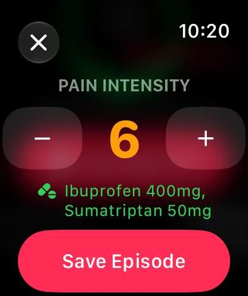</button><figcaption>Пресет с iPhone: 6/10 и препараты</figcaption></figure>
        <figure class="watch"><button class="shot" type="button">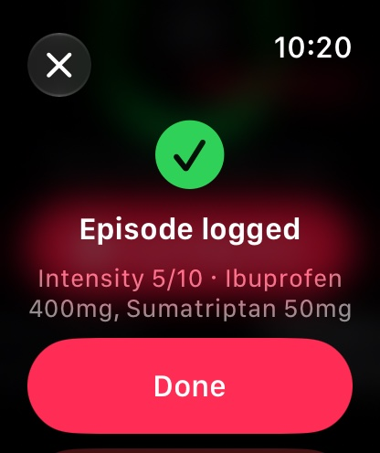</button><figcaption>Приступ сохранён</figcaption></figure>
      </div>
    </article>

    <article class="step watch" id="s10">
      <div class="num">10</div>
      <div class="story">
        <span class="device watch">Apple Watch</span>
        <h2>Компликации на циферблате</h2>
        <p>В редакторе циферблата у MigraTrack две компликации: «Log Migraine» и «Pain-Free Days». На Infograph ставим <strong>LOG</strong> в круг справа, кольцо дней без боли в нижний круг и «Log Migraine» в угол.</p>
        <p>Тап по LOG открывает приложение, и оно сразу сохраняет приступ с пресетом. watchOS разрешает компликации на циферблате только открыть приложение. Экран подтверждения даёт Undo на случай случайного тапа.</p>
        <div class="check">Тап по LOG, SQLite iPhone: <code>6 | QuickLog</code></div>
        <div class="check">Undo: приступ удалён на часах и на iPhone</div>
      </div>
      <div class="shots">
        <figure class="watch"><button class="shot" type="button">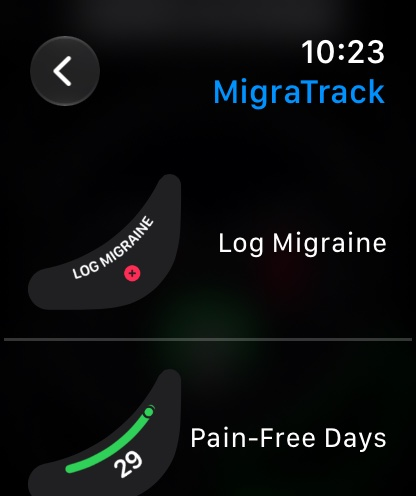</button><figcaption>Компликации MigraTrack в галерее</figcaption></figure>
        <figure class="watch"><button class="shot" type="button">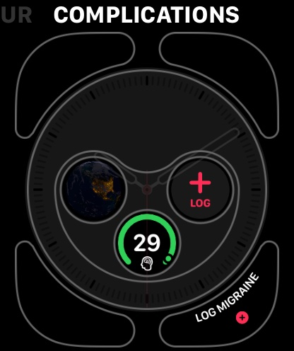</button><figcaption>Круг, кольцо и угол</figcaption></figure>
        <figure class="watch"><button class="shot" type="button"></button><figcaption>Циферблат с компликациями</figcaption></figure>
        <figure class="watch"><button class="shot" type="button">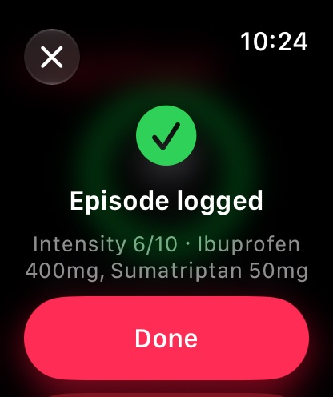</button><figcaption>Один тап: приступ сохранён</figcaption></figure>
        <figure class="watch"><button class="shot" type="button">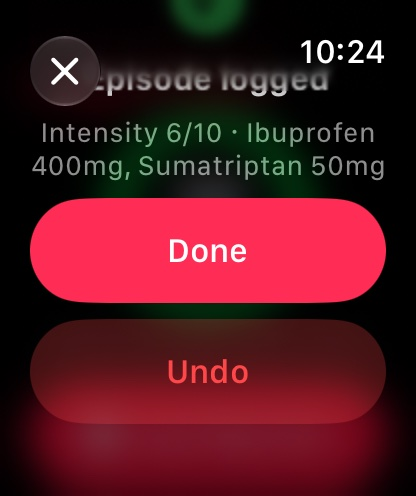</button><figcaption>Undo для случайного тапа</figcaption></figure>
      </div>
    </article>

    <article class="step watch" id="s11">
      <div class="num">11</div>
      <div class="story">
        <span class="device watch">Apple Watch</span><span class="device phone">iPhone</span>
        <h2>Smart Stack: лог без открытия приложения</h2>
        <p>Ту же компликацию добавляем в Smart Stack. Там кнопка выполняет действие на месте: тап сохранил приступ <strong>6/10</strong>, приложение не открылось.</p>
        <p>Расширение компликаций не может связаться с iPhone. Приступ ждёт в очереди часов и уходит при следующем открытии приложения на часах. После этого он появился на iPhone.</p>
        <div class="check">SQLite часов: <code>6 | QuickLog</code>, очередь <code>1</code> → после открытия приложения <code>0</code></div>
      </div>
      <div class="shots">
        <figure class="watch"><button class="shot" type="button">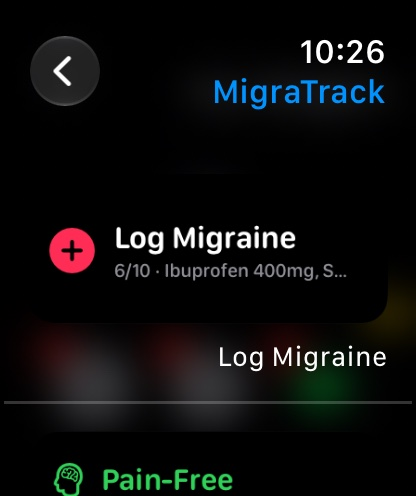</button><figcaption>Виджет в галерее Smart Stack</figcaption></figure>
        <figure class="watch"><button class="shot" type="button">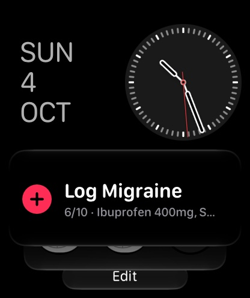</button><figcaption>Виджет в Smart Stack</figcaption></figure>
        <figure class="watch"><button class="shot" type="button"></button><figcaption>После тапа приложение не открылось</figcaption></figure>
        <figure><button class="shot" type="button">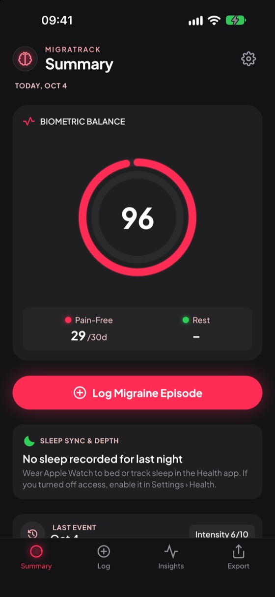</button><figcaption>iPhone: Last Event 6/10 с часов</figcaption></figure>
      </div>
    </article>

    <article class="step" id="s12">
      <div class="num">12</div>
      <div class="story">
        <span class="device phone">iPhone</span>
        <h2>Управление приступом и профилем</h2>
        <p>Тап по Last Event открывает системный лист удаления. Settings сводит профиль: дату регистрации, число логов, диагнозы, 5 триггеров и препараты.</p>
        <p>Имя вводится в системном алерте и попадает в отчёт. Sign Out предупреждает, что данные есть только на этом iPhone, и удаляет их после подтверждения. В тесте я нажал Cancel.</p>
      </div>
      <div class="shots">
        <figure><button class="shot" type="button"></button><figcaption>Удаление приступа</figcaption></figure>
        <figure><button class="shot" type="button"></button><figcaption>Settings</figcaption></figure>
        <figure><button class="shot" type="button"></button><figcaption>Ввод имени</figcaption></figure>
        <figure><button class="shot" type="button"></button><figcaption>Имя в профиле, Load Sample Data</figcaption></figure>
        <figure><button class="shot" type="button">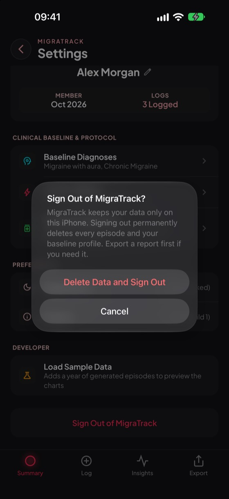</button><figcaption>Подтверждение Sign Out</figcaption></figure>
      </div>
    </article>

    <article class="step" id="s13">
      <div class="num">13</div>
      <div class="story">
        <span class="device phone">iPhone</span>
        <h2>Insights за неделю, месяц, полгода и год</h2>
        <p>Для графиков я загрузил демо-данные за год (Settings › Developer). Столбец делится на дни мигрени (розовый) и дни без боли (зелёный). В недельном виде розовая часть показывает пиковую боль дня.</p>
        <p>Значок тренда сравнивает последние 7, 30, 182 или 365 дней с таким же периодом раньше. Без приступов в прошлом периоде значка нет.</p>
      </div>
      <div class="shots">
        <figure><button class="shot" type="button"></button><figcaption>Месяц: 4 приступа, +100%</figcaption></figure>
        <figure><button class="shot" type="button"></button><figcaption>Неделя: пик боли по дням</figcaption></figure>
        <figure><button class="shot" type="button"></button><figcaption>6 месяцев: 18 приступов, +19%</figcaption></figure>
        <figure><button class="shot" type="button"></button><figcaption>Год: 27 приступов</figcaption></figure>
      </div>
    </article>

    <article class="step" id="s14">
      <div class="num">14</div>
      <div class="story">
        <span class="device phone">iPhone</span>
        <h2>Экспорт в PDF и Excel</h2>
        <p>Export показывает число приступов и диапазон отчёта. Диапазон меняется в action sheet, переключатели решают, что войдёт в отчёт.</p>
        <p>PDF открывается в Quick Look: две страницы с профилем, графиком боли, препаратами, симптомами и журналом. Excel уходит через системный share sheet.</p>
        <div class="check">.xlsx на Mac: <code>unzip -t</code> без ошибок, 11 строк, даты как настоящие даты</div>
      </div>
      <div class="shots">
        <figure><button class="shot" type="button"></button><figcaption>Export</figcaption></figure>
        <figure><button class="shot" type="button"></button><figcaption>Выбор диапазона</figcaption></figure>
        <figure><button class="shot" type="button"></button><figcaption>PDF в Quick Look</figcaption></figure>
        <figure><button class="shot" type="button"></button><figcaption>Share sheet с .xlsx</figcaption></figure>
        <figure class="wide"><button class="shot" type="button"></button><figcaption>Лист Episodes того же файла, открытый на Mac</figcaption></figure>
      </div>
    </article>

    <article class="step" id="s15">
      <div class="num">15</div>
      <div class="story">
        <span class="device phone">iPhone</span>
        <h2>Spotlight и Siri</h2>
        <p>Поиск «Log Migraine» показывает App Shortcut первым результатом. Тап сохранил приступ с пресетом, приложение не открылось. Та же команда работает в Siri и на кнопке Action.</p>
        <div class="check">SQLite iPhone: новый <code>6 | QuickLog</code></div>
      </div>
      <div class="shots">
        <figure class="wide flat" style="width:min(320px,100%)"><button class="shot" type="button"></button><figcaption>App Shortcut в Spotlight</figcaption></figure>
      </div>
    </article>
  </section>

  <section aria-labelledby="checks">
    <div class="section-head">
      <span class="eyebrow">Данные</span>
      <h2 id="checks">Что проверено в базах</h2>
      <p>Каждое действие я сверял с SQLite на iPhone и в App Group на часах. Синхронизация завершена, когда очередь часов пуста.</p>
    </div>
    <div class="table-wrap">
      <table>
        <thead><tr><th>Действие</th><th>Где сохранено</th><th>Что в базе</th><th>Итог</th></tr></thead>
        <tbody>
          <tr><td>Лог на iPhone, 9/10</td><td>iPhone</td><td><code>9 | App</code>, три препарата</td><td><span class="pill pass">Пройдено</span></td></tr>
          <tr><td>Лог в приложении на часах, 5/10</td><td>часы → iPhone</td><td><code>5 | App</code> на iPhone через секунду</td><td><span class="pill pass">Пройдено</span></td></tr>
          <tr><td>Тап по LOG на циферблате</td><td>часы → iPhone</td><td><code>6 | QuickLog</code> на iPhone</td><td><span class="pill pass">Пройдено</span></td></tr>
          <tr><td>Undo после быстрого лога</td><td>часы и iPhone</td><td>Приступ удалён на обоих, запрос на удаление очищен</td><td><span class="pill pass">Пройдено</span></td></tr>
          <tr><td>Тап в Smart Stack</td><td>расширение часов</td><td><code>6 | QuickLog</code>, очередь 1 → 0 после открытия приложения</td><td><span class="pill pass">Пройдено</span></td></tr>
          <tr><td>Перезагрузка часов</td><td>часы</td><td>Данные на месте, кольцо 29/30</td><td><span class="pill pass">Пройдено</span></td></tr>
          <tr><td>App Shortcut из Spotlight</td><td>iPhone</td><td>Новый <code>6 | QuickLog</code></td><td><span class="pill pass">Пройдено</span></td></tr>
          <tr><td>Экспорт .xlsx</td><td>файл</td><td>Архив без ошибок, 11 строк за 90 дней</td><td><span class="pill pass">Пройдено</span></td></tr>
        </tbody>
      </table>
    </div>
  </section>

  <section aria-labelledby="notes">
    <div class="section-head">
      <span class="eyebrow">Замечания</span>
      <h2 id="notes">Что заметил по ходу</h2>
      <p>Ошибок приложения в этом прогоне нет. Ниже одно наблюдение по дизайну, одно ограничение платформы и особенности симулятора.</p>
    </div>
    <div class="notes">
      <div class="note">
        <h3><span class="pill note">Дизайн</span>Месяцы на графике 6M и Y похожи</h3>
        <p>Розовая часть столбца не опускается ниже 14%, чтобы один день мигрени оставался видимым. Поэтому месяцы с 1 и с 4 днями мигрени выглядят одинаково. Можно уменьшить минимум или подписать число дней над столбцом.</p>
      </div>
      <div class="note">
        <h3><span class="pill note">watchOS</span>Smart Stack и Control ждут приложение</h3>
        <p>Лог из Smart Stack или Control выполняется в расширении, которое не может связаться с iPhone. Приступ уходит на iPhone при следующем открытии приложения на часах. Лог с циферблата и из приложения уходит сразу.</p>
      </div>
      <div class="note">
        <h3><span class="pill sim">Симулятор</span>Не связано с приложением</h3>
        <ul>
          <li>Переключатель в листе HealthKit не реагирует на тап, сработал «Select All».</li>
          <li>После переустановки приложения на часах компликации пропали с циферблата до перезагрузки симулятора.</li>
          <li>В режиме Always On часы не принимают тапы.</li>
          <li>Ответ Siri после App Shortcut исчезает быстрее, чем делается снимок; база подтверждает лог.</li>
        </ul>
      </div>
      <div class="note">
        <h3><span class="pill sim">Не проверено</span>Нужно реальное устройство</h3>
        <ul>
          <li>Control в Control Center часов: симулятор его не открывает. По системным логам Control зарегистрирован.</li>
          <li>Реальные данные сна из Apple Health.</li>
          <li>Передача через очередь <code>transferUserInfo</code>: в симуляторе она не доходит, проверена прямая отправка.</li>
        </ul>
      </div>
    </div>
  </section>
</main>

<dialog id="zoom" aria-label="Увеличенный снимок">
  
  <p id="zoom-caption"></p>
</dialog>

<script>
(function () {
  var dialog = document.getElementById("zoom");
  var img = document.getElementById("zoom-img");
  var caption = document.getElementById("zoom-caption");
  document.querySelectorAll(".shot").forEach(function (button) {
    button.addEventListener("click", function () {
      var source = button.querySelector("img");
      var figcaption = button.closest("figure").querySelector("figcaption");
      img.src = source.currentSrc || source.src;
      img.alt = source.alt;
      caption.textContent = figcaption ? figcaption.textContent : "";
      if (typeof dialog.showModal === "function") dialog.showModal();
    });
  });
  dialog.addEventListener("click", function () { dialog.close(); });
})();
</script>
